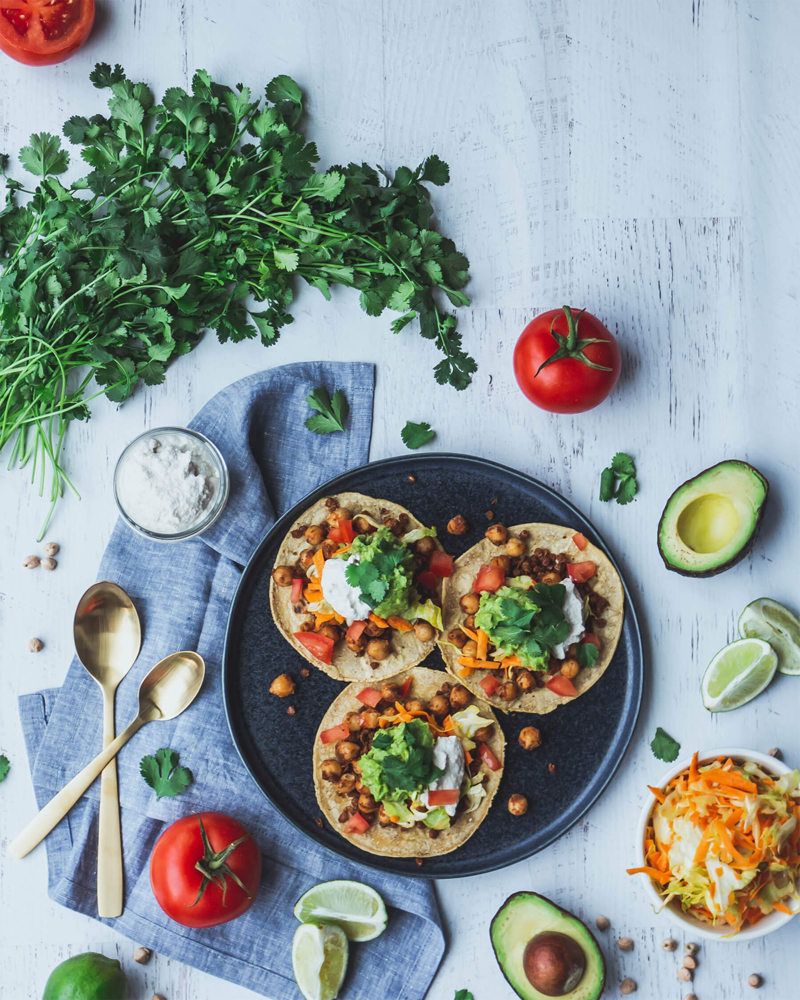

ひよこ豆とアボガドのタコス
たっぷりのひよこ豆とレンズ豆にアボガドとトマトを添えて、少しライムを絞ったらおいしいタコスのできあがりです。
- テキストテキスト
- テキストテキスト
- テキストテキスト
- テキストテキスト
- テキストテキスト
材料（２人分）
作り方（２人分）
- 1. テキストテキストテキストテキスト
- 2. テキストテキストテキストテキスト
- 3. テキストテキストテキストテキスト
- 4. テキストテキストテキストテキスト
- 5. テキストテキストテキストテキスト